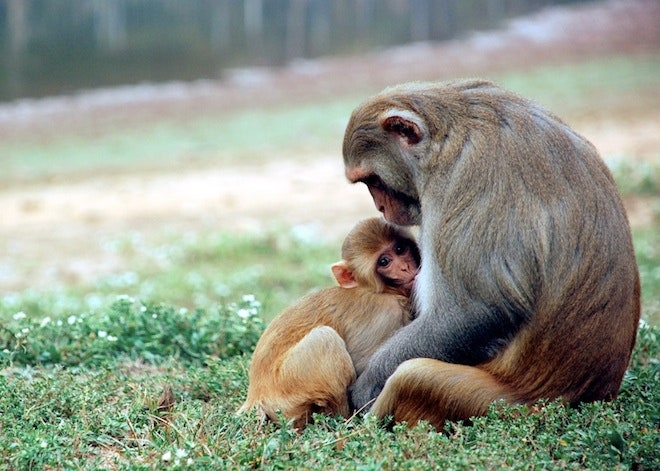
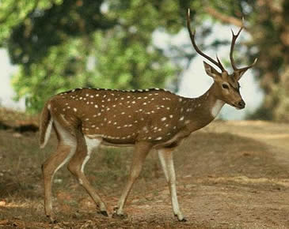

1.Tiger
The tiger (Panthera tigris) is the largest living cat species and a member of the genus Panthera. It is most recognisable for its dark vertical stripes on orange-brown fur with a lighter underside. It is an apex predator, primarily preying on ungulates such as deer and wild boar. It is territorial and generally a solitary but social predator, requiring large contiguous areas of habitat, which support its requirements for prey and rearing of its offspring. Tiger cubs stay with their mother for about two years, before they become independent and leave their mother's home range to establish their own. The tiger was first scientifically described in 1758 and once ranged widely from the Eastern Anatolia Region in the west to the Amur River basin in the east, and in the south from the foothills of the Himalayas to Bali in the Sunda Islands. Since the early 20th century, tiger populations have lost at least 93% of their historic range and have been extirpated from Western and Central Asia, the islands of Java and Bali, and in large areas of Southeast and South Asia and China. Today, the tiger's range is fragmented, stretching from Siberian temperate forests to subtropical and tropical forests on the Indian subcontinent and Sumatra.

Click on the image for the sound
2.Elephant
Elephants are the largest existing land animals. Three species are currently recognised: the African bush elephant, the African forest elephant, and the Asian elephant. Elephantidae is the only surviving family of the order Proboscidea; extinct members include the mastodons. The family Elephantidae also contains several extinct groups, including the mammoths and straight-tusked elephants. African elephants have larger ears and concave backs, whereas Asian elephants have smaller ears, and convex or level backs. Distinctive features of all elephants include a long proboscis called a trunk, tusks, large ear flaps, massive legs, and tough but sensitive skin. The trunk is used for breathing, bringing food and water to the mouth, and grasping objects. Tusks, which are derived from the incisor teeth, serve both as weapons and as tools for moving objects and digging. The large ear flaps assist in maintaining a constant body temperature as well as in communication. The pillar-like legs carry their great weight.

Click on the image for the sound
3.Monkey
Monkey is a common name that may refer to certain groups or species of simian mammals of infraorder Simiiformes. The term is applied descriptively to groups of primates, such as families of New World monkeys and Old World monkeys. Many monkey species are tree-dwelling (arboreal), although there are species that live primarily on the ground, such as baboons. Most species are mainly active during the day (diurnal). Monkeys are generally considered to be intelligent, especially the Old World monkeys of Catarrhini. Simians and tarsiers emerged within haplorrhines some 60 million years ago. New World monkeys and catarrhine monkeys emerged within the simians some 35 million years ago. Old World monkeys and Hominoidea emerged within the catarrhine monkeys some 25 million years ago. Extinct basal simians such as Aegyptopithecus or Parapithecus [35-32 million years ago], eosimiidea and sometimes even the Catarrhini group are also considered monkeys by primatologists. Lemurs, lorises, and galagos are not monkeys; instead they are strepsirrhine primates. Like monkeys, tarsiers are haplorhine primates; however, they are also not monkeys.
Click on the image for the sound
4.Deer
Deer or true deer are hoofed ruminant mammals forming the family Cervidae. The two main groups of deer are the Cervinae, including the muntjac, the elk (wapiti), the red deer, the fallow deer, and the chital; and the Capreolinae, including the reindeer (caribou), the roe deer, the mule deer, and the moose. Female reindeer, and male deer of all species except the Chinese water deer, grow and shed new antlers each year. In this they differ from permanently horned antelope, which are part of a different family (Bovidae) within the same order of even-toed ungulates (Artiodactyla). The musk deer (Moschidae) of Asia and chevrotains (Tragulidae) of tropical African and Asian forests are separate families that are also in the ruminant clade Ruminantia; they are not especially closely related to Cervidae. Deer appear in art from Paleolithic cave paintings onwards, and they have played a role in mythology, religion, and literature throughout history, as well as in heraldry, such as red deer that appear in the coat of arms of Åland.Their economic importance includes the use of their meat as venison, their skins as soft, strong buckskin, and their antlers as handles for knives. Deer hunting has been a popular activity since at least the Middle Ages and remains a resource for many families today.
Click on the image for the sound
5.Snake
Snakes are elongated, limbless, carnivorous reptiles of the suborder Serpentes.Like all other squamates, snakes are ectothermic, amniote vertebrates covered in overlapping scales. Many species of snakes have skulls with several more joints than their lizard ancestors, enabling them to swallow prey much larger than their heads with their highly mobile jaws. To accommodate their narrow bodies, snakes' paired organs (such as kidneys) appear one in front of the other instead of side by side, and most have only one functional lung. Some species retain a pelvic girdle with a pair of vestigial claws on either side of the cloaca. Lizards have evolved elongate bodies without limbs or with greatly reduced limbs about twenty-five times independently via convergent evolution, leading to many lineages of legless lizards.These resemble snakes, but several common groups of legless lizards have eyelids and external ears, which snakes lack, although this rule is not universal (see Amphisbaenia, Dibamidae, and Pygopodidae).

Click on the image for the sound